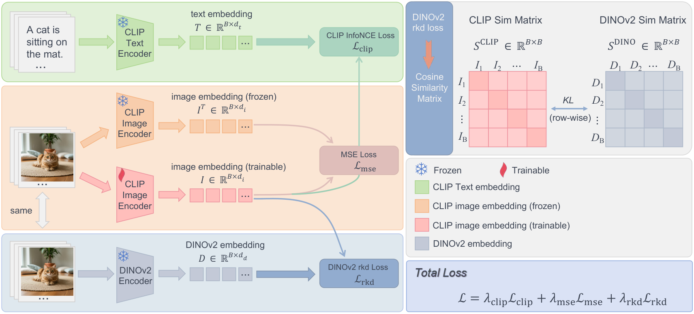
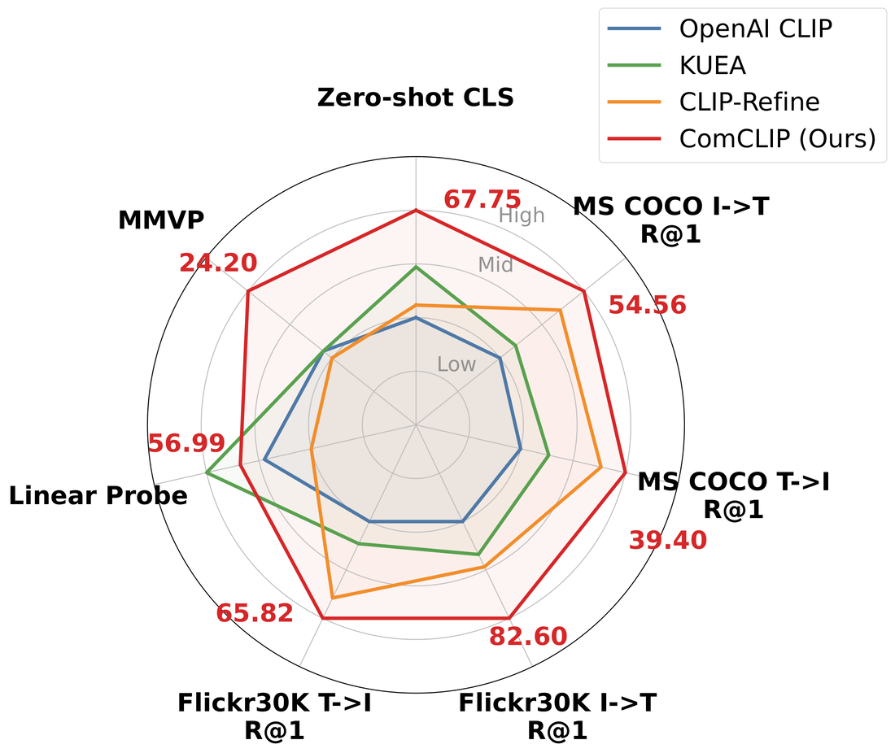

Overview of ComCLIP. Three branches operate jointly: (i) the frozen CLIP text encoder for image-text alignment (\(\mathcal{L}_{\text{clip}}\)), (ii) the trainable CLIP image encoder anchored to its frozen pretrained counterpart (\(\mathcal{L}_{\text{mse}}\)), and (iii) a frozen DINOv2 encoder providing relational supervision via batch-wise similarity matrices (\(\mathcal{L}_{\text{rkd}}\)). All three losses operate on the post-projection embedding.
Abstract
CLIP serves as a foundational vision-language model and the de facto vision encoder for downstream VLMs such as LLaVA. Post-training offers a lightweight route to refine CLIP, but recent work argues that the standard contrastive loss is unsuitable for post-training due to catastrophic forgetting under small batches, motivating designs that abandon the contrastive objective in favor of distillation. We revisit this premise and find that, for the InfoNCE objective, the reported forgetting is driven primarily not by insufficient negatives but by an inappropriate magnitude of the contrastive temperature \(\tau\): with \(\tau\) set sufficiently small, contrastive post-training improves rather than degrades the pretrained CLIP, which we explain through the temperature dependence of the InfoNCE gradient.
Building on this finding, we propose ComCLIP, a lightweight single-epoch post-training recipe that freezes CLIP's text encoder—so the refined vision encoder is a drop-in replacement with unchanged architecture and inference cost—and trains the vision encoder with a properly-tempered contrastive loss, an MSE anchoring loss against the original CLIP, and a relational distillation loss from DINOv2. Over multiple seeds, ComCLIP matches the self-distillation baseline CLIP-Refine on zero-shot classification while significantly improving the transferability of visual features, measured by linear probing (48.99 vs. 42.28 on ViT-B/16), and on ViT-L/14 it also improves MMVP over CLIP-Refine (24.20 vs. 19.01); CLIP-Refine remains stronger on image-text retrieval. Used as a drop-in vision encoder for LLaVA-1.5-7B without re-aligning the projector or LLM, ComCLIP yields no net change across 8 VLM benchmarks, i.e., the refinement does not break downstream compatibility.
Finding 1Temperature matters more than batch size
Inheriting CLIP's pretraining temperature \(\tau \approx 0.07\) reproduces the catastrophic forgetting reported in prior work. With a substantially smaller \(\tau = 0.01\), the same objective, data and compute improve the pretrained model. Both runs below train ViT-B/16 on CC3M for one epoch with \(\mathcal{L}_{\text{clip}}\) only.
Sweeping the temperature
Zero-shot accuracy (12-dataset avg) · batch size 1,024
Sweeping the batch size
Zero-shot accuracy (12-dataset avg) · \(\tau = 0.01\)
Both panels share one y-axis. Going from batch 128 to 2,048 gains +1.03, while the jump from \(\tau = 0.07\) to \(\tau = 0.01\) is worth +5.00. Every \(50 \le 1/\tau \le 200\) beats the base model, and \(\tau = 0.01\) does so at every batch size tested. Fixed and learnable \(\tau\) differ by at most 0.05. ViT-B/16, CC3M, one epoch, \(\mathcal{L}_{\text{clip}}\) only, single runs.
Why a small temperature helps
For the image-to-text term of sample \(i\), with similarities \(s_{ij} = \mathbf{u}_i^\top \mathbf{v}_j\) and softmax weights \(p_{ij}\), the gradient with respect to the logits is
A pretrained CLIP already separates most matched pairs from mismatched ones, so the margin \(\Delta_{ij} = s_{ii} - s_{ij}\) is positive for most in-batch negatives. With a small \(\tau\), \(\Delta_{ij}/\tau\) is large for all but the hardest negatives. The gradient on easy pairs vanishes exponentially, which leaves the pretrained geometry intact, and the update concentrates on the few hard negatives, which refines it. At \(\tau \approx 0.07\), typical margins are of the same order as \(\tau\), so many already-correct pairs keep receiving gradient. The encoder then re-fits the small post-training corpus instead of correcting its remaining errors. This is the forgetting reported in prior work.
Practical guidance: set \(\tau\) well below the pretraining initialization so that \(\Delta_{ij}/\tau \gg 1\) for most negatives. We fix \(\tau = 0.01\) and transfer it unchanged to ViT-L/14, SigLIP, COCO Caption and CC12M. The analysis is specific to InfoNCE. It does not cover KL-based self-distillation or SigLIP's sigmoid loss.
MethodComCLIP: refine relative structure, anchor absolute geometry
ComCLIP freezes the CLIP text encoder and trains only the vision encoder for one epoch with three losses on the post-projection embedding \(\mathbf{u}\):
\(\mathcal{L}_{\text{clip}}\) · tempered InfoNCE
Symmetric InfoNCE against the frozen text encoder, with \(\tau\) fixed at 0.01. It drives zero-shot classification and retrieval.
\(\mathcal{L}_{\text{mse}}\) · feature anchor
MSE between \(\mathbf{u}(x)\) and the embedding \(\mathbf{u}^0(x)\) of a frozen copy of the original encoder. It stops the encoder from drifting and preserves transferable features.
\(\mathcal{L}_{\text{rkd}}\) · DINOv2 relations
Row-wise KL between the batch similarity distributions of CLIP and DINOv2 (\(T = 0.1\)). It transfers DINOv2's view of which images are close to which, without forcing CLIP into DINOv2's coordinates.
The delivered model is a single CLIP vision encoder with the same architecture, parameter count and inference cost as the input model. It can replace CLIP directly, including inside LLaVA-1.5. Training: AdamW, lr \(10^{-6}\), weight decay 0.1, 410 warm-up steps, global batch 1,024, all \(\lambda = 1\).
Finding 2Each loss moves a different group of metrics
Training every subset of the three losses shows that they act on largely separable metrics. \(\mathcal{L}_{\text{clip}}\) alone raises zero-shot accuracy and retrieval but leaves linear probing flat. \(\mathcal{L}_{\text{mse}}\) alone is a no-op. \(\mathcal{L}_{\text{rkd}}\) alone pulls the embedding away from the text space. Combined, the anchor lets the contrastive signal improve alignment without eroding transferable features.
| Configuration | \(\mathcal{L}_{\text{clip}}\) | \(\mathcal{L}_{\text{mse}}\) | \(\mathcal{L}_{\text{rkd}}\) | Zero-shot | MS COCO R@1 | Flickr30K R@1 | Linear probe | ||
|---|---|---|---|---|---|---|---|---|---|
| 12-avg | I→T | T→I | I→T | T→I | 5-avg | ||||
| OpenAI CLIP | – | – | – | 61.82 | 48.16 | 31.47 | 74.70 | 57.10 | 44.70 |
| Contrastive only | ✓ | – | – | 62.90 | 51.92 | 38.28 | 76.80 | 64.56 | 44.04 |
| Anchor only | – | ✓ | – | 61.82 | 48.18 | 31.45 | 74.70 | 57.12 | 44.79 |
| Relational only | – | – | ✓ | 56.64 | 43.30 | 25.57 | 69.30 | 49.66 | 44.42 |
| Anchor + relational | – | ✓ | ✓ | 61.36 | 49.98 | 31.53 | 75.40 | 58.08 | 45.50 |
| Contrastive + anchor | ✓ | ✓ | – | 63.35 | 51.64 | 37.03 | 77.00 | 64.34 | 48.60 |
| Contrastive + relational | ✓ | – | ✓ | 62.49 | 51.50 | 36.67 | 77.30 | 63.96 | 47.15 |
| ComCLIP (all three) | ✓ | ✓ | ✓ | 63.15 | 52.20 | 36.18 | 77.80 | 63.22 | 48.74 |
Loss decoupling on ViT-B/16, CC3M, one epoch, \(\tau = 0.01\), single runs. Best per column in bold. In a 3-seed control, adding \(\mathcal{L}_{\text{rkd}}\) to \(\mathcal{L}_{\text{clip}} + \mathcal{L}_{\text{mse}}\) significantly improves linear probing on ViT-L/14 (56.36 → 57.12, \(p \approx 0.013\)). On ViT-B/16 the gain has the same sign but is not significant.
ResultsBetter transferable features at zero-shot parity
ComCLIP and the self-distillation baseline CLIP-Refine sit at different points of a trade-off. On ViT-B/16 over three seeds, the two are at parity on zero-shot classification (63.00 vs. 62.87, \(p = 0.26\)). CLIP-Refine is ahead on retrieval, and ComCLIP is far ahead on linear probing (48.99 vs. 42.28, \(p < 0.001\)). CLIP-Refine pushes linear probing below the original CLIP, while ComCLIP raises it.
| Method | Zero-shot | MS COCO R@1 | Flickr30K R@1 | Lin. probe | MMVP | ||
|---|---|---|---|---|---|---|---|
| 12-avg | I→T | T→I | I→T | T→I | 5-avg | avg | |
| OpenAI CLIP | 61.82 | 48.16 | 31.47 | 74.70 | 57.10 | 44.70 | 12.59 |
| + KUEA (IN-1K) | 62.07 | 48.48 | 31.99 | 75.00 | 57.62 | 44.65 | 11.85 |
| + KUEA (CC3M) | 61.99 | 48.00 | 31.47 | 75.00 | 57.00 | 44.72 | 14.07 |
| + CLIP-Refine (COCO) | 62.87±0.11 | 54.17±0.28 | 37.72±0.07 | 81.30±0.40 | 64.45±0.21 | 42.28±0.62 | 16.05±1.14 |
| + CLIP-Refine (CC3M) | 61.59 | 41.12 | 33.29 | 66.20 | 60.18 | 44.89 | 19.26 |
| + ComCLIP (COCO) | 62.97 | 52.24 | 35.36 | 79.50 | 61.36 | 47.23 | 15.56 |
| + ComCLIP (CC3M) | 63.00±0.13 | 52.49±0.28 | 36.17±0.02 | 77.80±0.00 | 63.11±0.09 | 48.99±0.35 | 14.81±2.97 |
| + ComCLIP (CC12M) | 63.04 | 51.58 | 35.56 | 77.10 | 62.42 | 46.56 | 15.56 |
| Method | Zero-shot | MS COCO R@1 | Flickr30K R@1 | Lin. probe | MMVP | ||
|---|---|---|---|---|---|---|---|
| 12-avg | I→T | T→I | I→T | T→I | 5-avg | avg | |
| OpenAI CLIP | 66.12 | 50.04 | 34.29 | 77.90 | 59.80 | 54.90 | 17.78 |
| + KUEA (IN-1K) | 66.89 | 50.88 | 35.66 | 79.50 | 61.18 | 59.92 | 17.78 |
| + KUEA (CC3M) | 66.36 | 50.30 | 34.68 | 78.00 | 60.02 | 55.82 | 18.52 |
| + CLIP-Refine (COCO) | 66.31 | 53.28 | 38.21 | 80.10 | 64.56 | 50.83 | 17.04 |
| + CLIP-Refine (CC3M) | – | – | – | – | – | – | 19.01±1.86 |
| + ComCLIP (COCO) | 67.09 | 54.32 | 38.79 | 81.80 | 64.98 | 58.28 | 20.74 |
| + ComCLIP (CC3M) | 67.75 | 54.56 | 39.40 | 82.60 | 65.82 | 56.99 | 24.20±0.86 |
| + ComCLIP (CC12M) | 67.78 | 53.74 | 38.63 | 80.10 | 65.00 | 57.42 | 22.22 |
Best and second-best per backbone in bold and underline; highlighting does not imply statistical significance. ComCLIP and CLIP-Refine train for 1 epoch, KUEA for 2 (its default). MMVP has only 135 image pairs (one pair = 0.74 points), so we draw MMVP conclusions only from multi-seed comparisons.

DownstreamA drop-in vision encoder for LLaVA-1.5
We swap LLaVA-1.5-7B's vision encoder for each post-trained ViT-L/14 and keep the projector and LLM frozen. ComCLIP produces no net change against the original CLIP (mean relative change +0.02%), while KUEA and CLIP-Refine each degrade 6 of the 9 scores. The refinement keeps downstream compatibility intact. It does not by itself improve VLM accuracy without re-alignment.
| Vision encoder | Rel. Δ | W/T/L | AI2D | POPE | RefCOCOg | V* | MME-c | MME-p | SQA-Img | OCRBench | TextVQA |
|---|---|---|---|---|---|---|---|---|---|---|---|
| OpenAI CLIP | – | – | 52.75 | 85.20 | 20.67 | 41.36 | 320.00 | 1350.79 | 67.63 | 27.80 | 34.57 |
| KUEA | −1.23% | 3/0/6 | 52.30 | 85.46 | 20.50 | 38.74 | 317.14 | 1350.82 | 66.68 | 27.40 | 34.69 |
| CLIP-Refine | −0.95% | 3/0/6 | 52.20 | 85.57 | 20.61 | 39.79 | 308.21 | 1345.97 | 67.72 | 27.60 | 34.84 |
| ComCLIP | +0.02% | 4/2/3 | 52.75 | 85.14 | 20.63 | 41.36 | 307.50 | 1373.47 | 67.82 | 28.20 | 34.89 |
LLaVA-1.5-7B with a swapped ViT-L/14 encoder; LLM and projector frozen. Rel. Δ is the mean per-benchmark relative change against OpenAI CLIP; W/T/L counts improved/tied/degraded scores. Best per column in bold.
ScopeLimitations
- ComCLIP targets CLIP-like models with a shared image-text contrastive space. The temperature analysis covers InfoNCE only, not CLIP-Refine's KL-based self-distillation or SigLIP's sigmoid loss.
- MMVP has only 135 pairs and large seed variance. The MMVP gain over CLIP-Refine is significant only on ViT-L/14, and generative enhancement methods report higher MMVP.
- Downstream evaluation uses one VLM configuration (LLaVA-1.5-7B with a frozen projector and LLM). Whether re-alignment turns the linear-probe gains into VLM gains is untested.
- Gains are not monotone in corpus size (CC12M is not better than CC3M on linear probing), and training runs a frozen CLIP copy and a DINOv2 teacher forward at every step.
BibTeX
@inproceedings{wang2026rethinking,
title = {Rethinking Contrastive Loss in CLIP Post-training: A Complementary Framework with Frozen Text Encoder},
author = {Wang, Zidan and Li, Yaqian and Zhang, Xiaokai and Long, Kaiwen and He, Kun and Liu, Hanpeng},
booktitle = {Advances in Neural Information Processing Systems (NeurIPS)},
year = {2026}
}